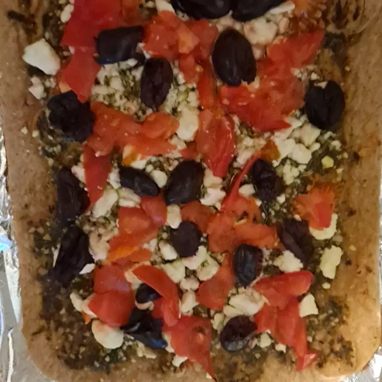

Mediterranean Pesto Pizza

This pizza is great for those who want a change from ordinary pizza. It is great with naan or Greek pita flatbreads!
Ingredients
- 2 tablespoons prepared pesto
- 2 (6 inch) Greek pita flatbreads
- ½ cup feta cheese
- 2 small tomatoes, chopped
- 8 pitted Kalamata olives
Directions
- Preheat oven to 350 degrees F (175 degrees C).
- Spread pesto onto each pita; top with feta cheese, tomatoes, and Kalamata olives. Place each pita onto a baking sheet.
- Bake in the preheated oven until cheese is melted, 6 to 8 minutes.